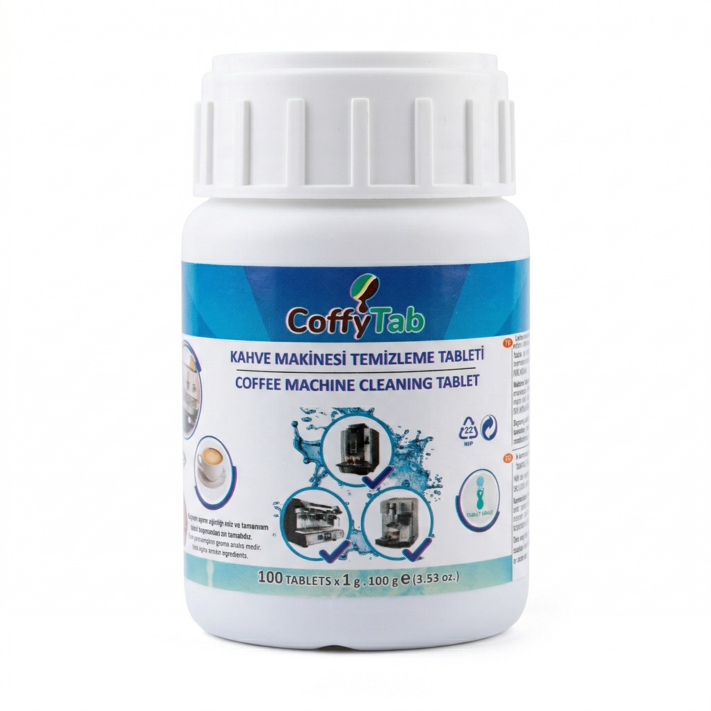
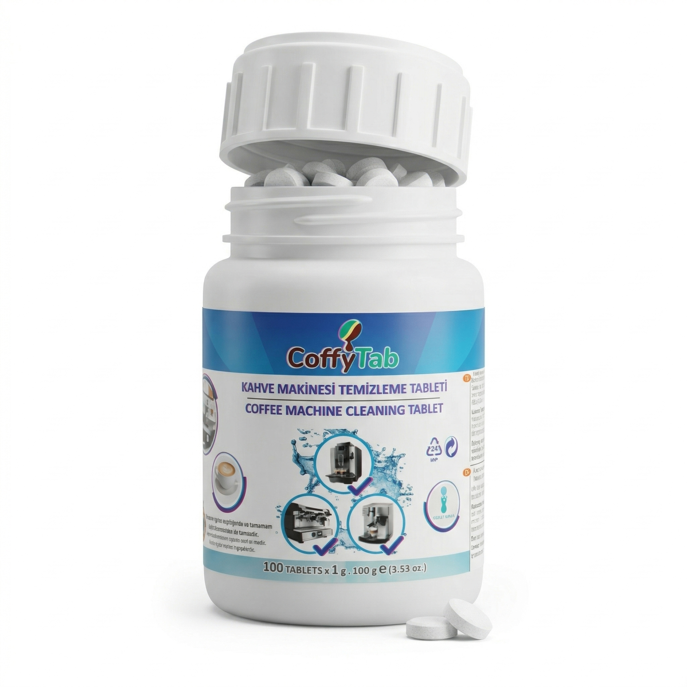
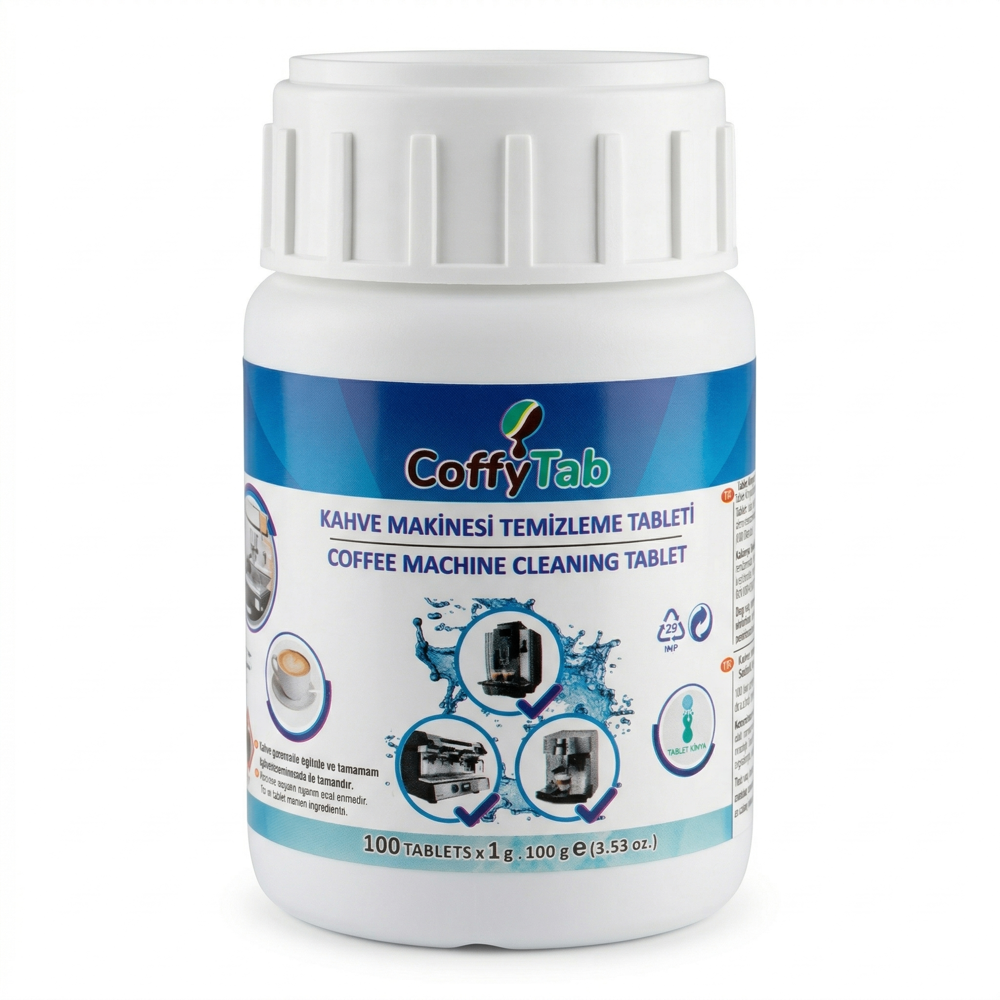

CofyCare Tablet
Kahve Makinesi Temizleme Tableti
₺
690
,00
Kargo dahil
Ürün Tipi:
Temizleme Tableti
Kutu İçeriği:
100 Tablet (1 gr each)
Kullanım Amacı:
Kahve Makinesi Bakımı
Uyumlu Kullanım:
Ev ve Ofis Tipi Makineler
Saklama:
Serin ve Kuru Yer
Hızlı Kargo
Kolay İade
7/24 Destek